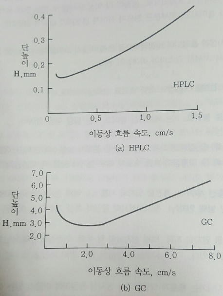
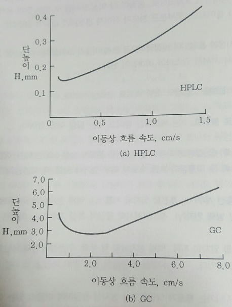
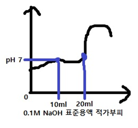
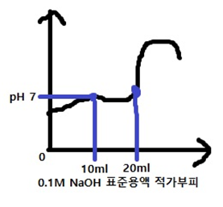
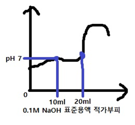

분석측정은 두 가지 요소로 구성되어 있다. 하나는 화학자가 관심을 갖는 분석시료의 정보를 갖고 있는 신호(signal)이고, 다른 요소는 잡음(noise)이다. 잡음은 분석의 정확도와 정밀도를 감소시키고 분석시료의 검출한계에 많은 방해작용을 한다. 일반적으로 분석방법의 특징 또는 분석기기의 성능을 잡음만으로 설명하는 것 보다는 신호대 잡음비(signal-to-noise-ratio)로 나타내는 방법이 더 좋은 계수가 된다. 신호대
잡음비를 정수로 나타내는 방법에 대하여 설명하시오.
Fourier 변환을 이용하여 분석신호와 잡음비를 분리하고 rectangle 함수를 이용하여 정수화한다.
아래에 측정된 흡광도를 이용하여 분석물의 몰농도를 구하시오. 셀의 길이는 1.0cm이다.
$$\begin{array}{|c|c|c|c|}\hline & \text{} & \text{} & \text{} \\ \hline $$
$$\begin{array}{|c|c|c|c|}\hline & \text{} & \text{} & \text{} \\ \hline $$
A= epsilon bC#
표준용액`A=0.267-0.019= epsilon TIMES 1 TIMES (3.15 TIMES 10 ^{-6} )#
epsilon =78730.15873#
시료용액`x= {0.176-0.019} over {78730.15873} =1.994 TIMES 10 ^{-6} M
적외선 분광계에 빈 시료 용기를 넣고 스펙트럼을 얻었을 때 파장 6.0~14um에서 14개의 간섭 봉우리가 나타났다. 시료 용기의 빛살 통과 길이 b는 얼마인가?
파수` bar{v} = {1} over {lambda }#
6.0 mu m`파수= {1} over {6.0 TIMES 10 ^{-4} cm} =1667cm ^{-1}#
14 mu m`파수= {1} over {14 TIMES 10 ^{-4} cm} =714cm ^{-1}#
b= {N} over {2( bar{v _{1}} - bar{v _{2}} )} = {14} over {2(1667-714)cm ^{-1}} =7.34 TIMES 10 ^{-3} cm#
=0.0734mm
(a)C6H4BrCl과 (b)C6H4Br₂의 질량 스펙트럼에서 M+, (M+2)+, (M+4)+ 봉우리의 높이비를 구하시오. 동위원소 상대적 존재비는 다음과 같다.
35Cl : 100, 37Cl : 32.5, 79Br : 100, 81Br : 98
(a)M+=(1.00*1)X(1.00*1)=1.00
(M+2)+=(0.98*1)X(1.00*1)+(1.00*1)X(0.325*1)=1.305
(M+4)+=(0.98*1)X(0.325*1)=0.3185
∴M+:(M+2)+:(M+4)+=1:1.31:0.32
(b)M+=(1.00*1)X(1.00*1)=1.00
(M+2)+=(0.98*1)X(1.00*1)+(1.00*1)X(0.98*1)=1,96
(M+4)+=(0.98*1)X(0.98*1)=0.96
∴M+:(M+2)+:(M+4)+=1:1.96:0.96
M+는 79Br, 35Cl 일때, (M+2)+는 81Br, 35Cl 또는 79Br, 37Cl 일때, (M+4)+는 81Br, 37Cl 일때. 이런식.
van Deemter 식인 H=A+B/u+Cu을 이용하여 액체 크로마토그래피와 기체 크로마토그래피의 van Deemter 도시를 비교하시오.
 
H값이 최소가 되는 지점의 이동상 흐름속도는 LC가 GC보다 작다. 최소점이 나타나는 것은 주로 세로확산 때문이다. 기체의 확산계수가 액체보다 더 크기 때문에 LC에서 더 낮은 흐름속도에서 최소점이 나타난다.

H값이 최소가 되는 지점의 이동상 흐름속도는 LC가 GC보다 작다. 최소점이 나타나는 것은 주로 세로확산 때문이다. 기체의 확산계수가 액체보다 더 크기 때문에 LC에서 더 낮은 흐름속도에서 최소점이 나타난다.
H=A+B/u+Cu
LC 경우 세로확산항(B/u항)이 매우 작고, GC 경우 Cu항이 작다.
액체 크로마토그래피에서 사용되는 등용매 용리는 무엇인가?
시작부터 끝까지 용매의 농도 또는 조성을 일정하게 유지하며 용리하는 방식.
HPLC에서 사용되는 검출기 종류 중 4가지를 쓰시오.
UV-VIS 검출기,
질량분석 검출기(MS),
IR 흡수 검출기,
전기화학 검출기,
증발산란광.
질량분석 검출기(MS),
IR 흡수 검출기,
전기화학 검출기,
증발산란광.
공동 침전의 종류 4가지는 무엇인가?
표면흡착,
혼성결정생성,
내포,
기계적 포획.
혼성결정생성,
내포,
기계적 포획.
공동 침전: 침전물이 만들어지는 동안에 용해되어 있어야 하는 화학종이 함께 침전되는 현상.
20mL Cl- 용액에 과량의 AgNO3를 가하여 AgCl(fw=143.321g/mol) 침전 0.4368g을 얻었다. Cl-의 몰농도는 얼마인가?
0.4368g` TIMES {1mol} over {143.321g} TIMES {1} over {20ml} TIMES {1000ml} over {1L} =0.1524M
0.05M HCl 용액 50mL에 0.1M NaOH 용액 10mL룰 가했을 때의 pH는 얼마인가?
HCl=2.5mmol, NaOH=1mmol
반응하면 H+ 1,5mmol 남음
[H+]=1.5mmol/60ml=0.025M
pH=-log[H+]=-log(0.025)=1.6
Ce4+ + Fe2+→ Ce3+ + Fe3+ 산화-환원 반응식을 산화 반응식과 환원 반응식으로 구분하여 각각 쓰고, 어는 것이 산화제와 환원제인지를 밝히시오.
산화반응식: Fe²⁺→Fe³⁺+e⁻
환원반응식: Ce⁴⁺+e⁻→Ce³⁺
산화제: Ce⁴⁺, 환원제: Fe²⁺
초자를 산으로 세척한 후 산이 남아있는지 알 수 있는 방법은 무엇인가?
만능 pH시험지를 초자에 붙여 pH를 측정해본다.
(a) 데이터 205, 222, 223, 226, 229 중에서 205를 버려야 하는가 말아야 하는가를 Q시험으로 결정하시오. (b) 95% 신뢰도 수준에서 참값이 있을 수 있는 신뢰 구간은 얼마인가?
측정수
5
90% 신로 수준
0.642
자유도
3
4
Student`s t
3.18
2.78
(a) Q= {205-222} over {229-205} =0.708
Q값이 Q기준값보다 크므로 버린다.
(b) 신뢰구간=평균± (t: t표, s: 표준편차)
★205 값은 버리므로 n=4가 됨. 또한 신뢰구간 구할 때 t-table은 자유도 n-1에서 표를 봐야한다.
평균=225, 표준편차=3.162
∴신뢰구간=225±=225±5.03
약산을 강염기로 적정한 아래의 적정곡선으로부터 이 약산의 pKa값을 구하라. 근거는?
 


pKa=7.0
(HA+NaOH→NaA+H2O)
약산을 강염기로 적정할 때, 당량점까지 적가된 부피의 1/2의 부피에 해당하는 반당량점에서는 [HA]=[A-]가 된다. 따라서 반당량점에서는 pH=pKa가 되므로 반당량점에서의 pH는 약산의 pKa가 된다.
pH=pKa+log([A-]/[HA])